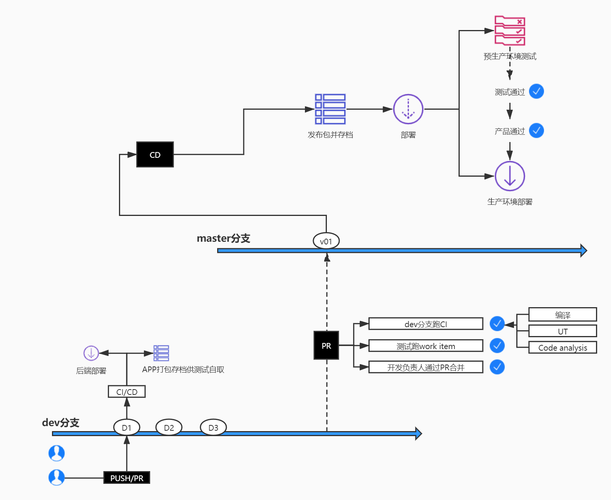
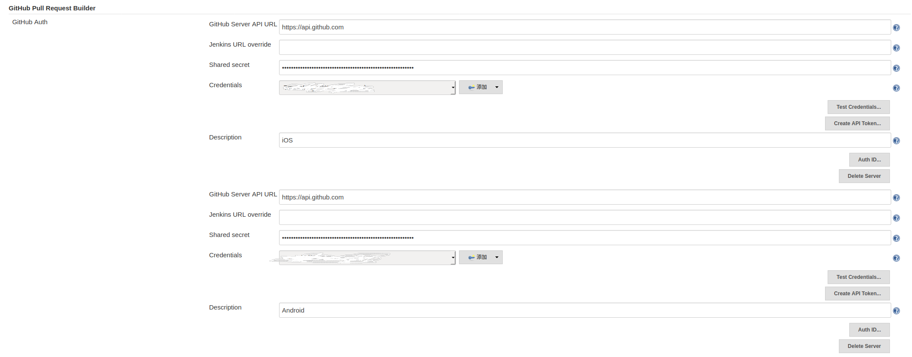
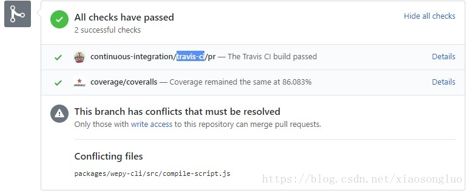

先说下我们为什么要做持续集成持续部署，这个工作流在企业中很多时候并不受决策者的欢迎，想要推进并不容易。
必要性
降低成本（特别是问题出现时的成本）
节省时间
Fail fast, Fail early
准确性和可靠性
增加对软件的信心
获得可衡量质量的指标
面对的困难
在开发进展和质量保证之间的取舍
没有单元测试
测试用例设计不到位，覆盖不全，或者不够高效
因为工期原因压缩自动化测试时间，自动化测试名存实亡
自动化基础设施不完善，某些测试编写成本比较高
缺少完善的测试数据支持，导致测试效果大打折扣
架构与流程

流程阐述
dev分支
代码提交到dev分支时（push或者merge），CI自动跑单元测试，单元测试通过并且符合代码覆盖率的予以通过，如果UT不通过的，需要开发及时更正并提交到测试通过。当天提交的代码需要当天通过。
提交代码时需要commet里标注好[feature]/[bug]xxx
例如[feature]1112,1234,3432[bug]11123,3455,123566
完成UT后CI继续操作：
APP端将代码打包成安装包命名为【版本】-【build】-【feature编号】-【bug编号】存放到ftp服务器供测试选取测试
服务端将代码自动发布到测试环境，发布前后发送邮件通知
测试拿到完成的feature后在测试环境编写自动化测试用例，并更新自动化测试脚本与数据master分支
当一个开发周期的feature开发完成，测试在测试环境进行测试（包括检查新增feature的测试脚本，bug核验）并认为可以提交生产后，开发将代码提交到master分支。
在收到pull request后CI自动进行UT，自动化脚本测试，代码覆盖率检查，通过后由team leader进行代码合并
合并后CD开始编译打包，按版本名命名并存档apk，ipa，jar。这里的存档可用于线上（特别是后端版本的快速回滚），jar包部署到预生产环境预生产环境
预生产环境使用生产环境镜像恢复，保留生产环境当时的数据，测试在预生产环境完成最终集成测试，测试通过后根据产品需求按时发布到生产环境线上生产环境
新版本上线后在生产环境进行核心功能点复查。
实践
上文中提到我是用Github来存储代码的
所以整个流程中我们需要监控Github推送的pr和merge(push)两类webhook请求。
经过筛选
| 操作 | 触发器 | 插件 |
|---|---|---|
| pull request | pull request | GitHub Pull Request Builder |
| merge | push | Generic Webhook Trigger |
GitHub Pull Request Builder提供了非常方便的pr回写可以与Github联动Generic Webhook Trigger 功能全面，但都需要手工配置
GitHub Pull Request Builder配置
先在Jenkins全局配置中配置插件的credentials

然后在项目配置中编辑
| 配置项 | 参数 |
|---|---|
| GitHub API credentials | 选择上面配置的对应账号 |
| Admin list | 填有权限的github账号 |
| Use github hooks for build triggering | √ |
| Trigger phrase | |
| Only use trigger phrase for build triggering | |
| Close failed pull request automatically? | |
| Skip build phrase | .[skip\W+ci]. 在comment上带上[skipci]可以跳过触发 |
| Display build errors on downstream builds? | |
| Crontab line | |
| White list | 组内需要提交代码的成员的Github账号 |
效果(配图为网图，一样的效果)

Generic Webhook Trigger配置
####从 Webhook 中获取变量
Generic Webhook Trigger 可以获取的变量有三种类型，获取到的变量会自动注册为该 Jenkins 任务的系统变量，可以通过 $parameter_name 的方式进行使用。
Post content parameters
这类变量从 POST 的具体内容中获取，格式支持JSON/XPATH，具体为：
Variable：是变量名
Expression：是变量的获取方式
Value filter：需要过滤的变量内容，一般不填
Default value：变量默认值，一般不填
其中，如果将 Expression 中设置为 $.a.b.c，即可获取到出下面 JSON 中的“value”。
1 | { |
Header parameters
这类变量从 Header 中获取，具体为：Request header：变量名即参数名
Value filter：需要过滤的变量内容，一般不填
需要注意的是，获取到的变量名是小写字母的形式，且将会用 ‘_’ 字符代替 ‘-’ 字符。Request parameters
这类变量从 URL 的 Request 参数中获取，具体为：Request parameter：变量名即参数名
Value filter：需要过滤的变量内容，一般不填
如何对 Webhook 进行过滤
Generic Webhook Trigger 中 Optional filter 部分即可配置过滤策略。其中：
Expression：设置过滤（通过）的条件，通过正则方式进行判断
Text：带过滤的文本内容，可以使用系统变量（上一部中获取了很多系统变量就可以在这里使用）
具体的配置项
Post content parameters
参数 head_branch
Variable:head_branch （Pull Request 的对比分支）
Expression:$.pull_request.head_branch
参数 base_branch
Variable:base_branch （Pull Request 的基准分支）
Expression:$.pull_request.base_branch
参数 action
Variable:action （Webhook 的事件内容）
Expression:$.action
参数 number
Variable:number（Pull Request 的具体 ID）
Expression:$.pull_request.number
Header parameters
参数 x_gogs_event（Webhook 的事件类别）
Request header：X-Gogs-Event
Optional filter
过滤策略：1.必须为 pull_request 事件类别下的 opened 事件；2.基准分支必须为 develop
Expression: pull_request_opened_develop
Text: $x_gogs_event_$action_$base_branch
需要说明的是：
head_branch 变量（Pull Request 的对比分支）将用于获取真正待测试的源码分支。
number 变量（Pull Request 的具体 ID）将在第三步中用于确定具体的URL地址。
搞定了这些配置，后面基本上就可以根据项目具体情况发挥了。